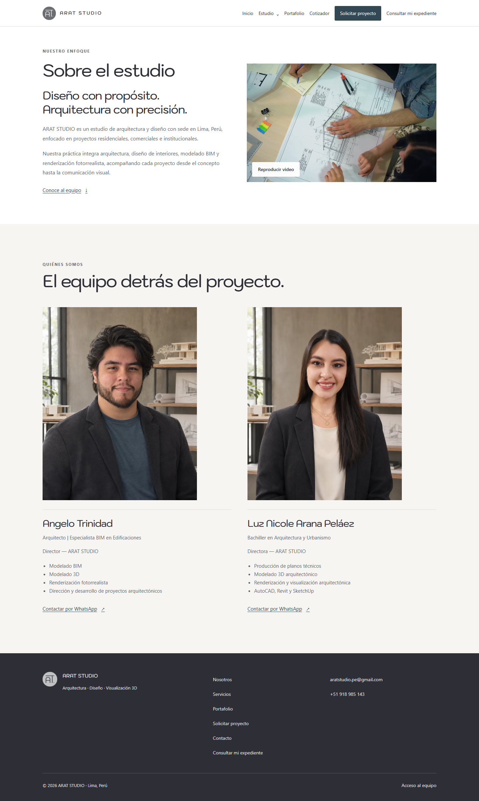
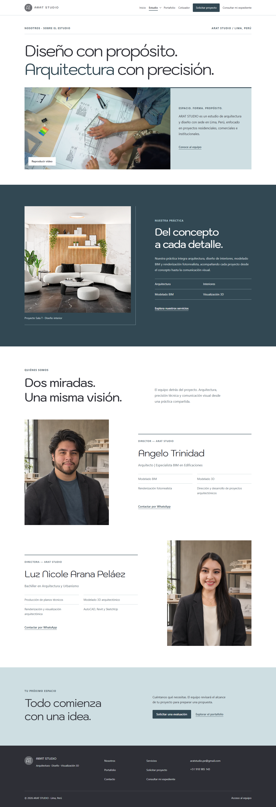

ARAT STUDIO · 25 de noviembre de 2026
Capturas reales de la misma instalación y el mismo ancho. Abre una imagen para verla en su tamaño original.
Informe, recursos y resultados de verificación

Las capturas usan movimiento reducido para comparar composiciones estables. La reproducción y el movimiento se verificaron por separado. Las cuentas y expedientes de las pruebas de navegador son ficticios y aislados.